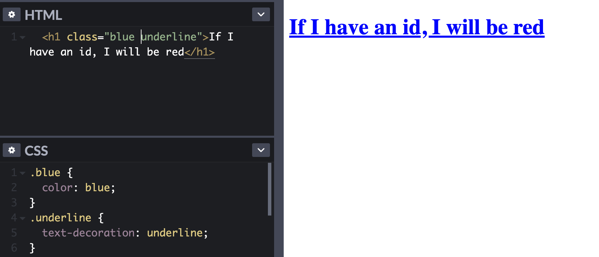

Class tags and id tags are used to apply rules to your elements in your HTML file via a CSS file or via inline styling. Basically, they are used to tell information on a website to be presented in a certain way, such as font color, positioning, borders and so on. Class tags are identified by using the . symbol before the tag name, while id tags use the # symbol.
The main difference between the two, is that class tags can be reused for multiple elements, while id tags are unique and can not. If comparing to cars, class tags are like the make of a car, while id tags are like the specific number plate. Many cars share the same shape, colours and motors which is comparable to using class tags, while every car has a specific number plate, which is similar to how id tags word.
The other main difference is that id tags have higher priority than class tags. This means that when an class and an id are applied to the same element, and they are both affecting the same trait, the rule set in the id tag will prevail.
Refer to the below image:
*As you can see the id tag holds priority here.
The other difference, is that multiple class tags can be applied to an element. Id tags can not. This makes it handy to apply rules from different class tags to the same element.
Refer to the below image:
*When more than one class uses the same trait rule, the last class tag will take priority.
In general, the class tag function has much more functionality than the id tag. However,there may be specific times where id will be more beneficial.
For example, if you were working with somebody elses stylesheet, but you wanted to change a few traits on one element. In this case, you may not want to change the entire class or make a new one from scratch. This is where id tags are handy.
In this scenario you could create an id tag for all of the traits you wanted to change and apply it to the element. As id tags take priority, it'll overwrite the relevant class functions, but leave the rest. This can be very handy for collaboration work.
In the end, it really comes down to context. Class tags have much more functionality, and allow you to repeat styling. However, id tags can help you when you're already using a hardset of styling rules and it can be helpful with applying Javascript rules. More on this in the future.